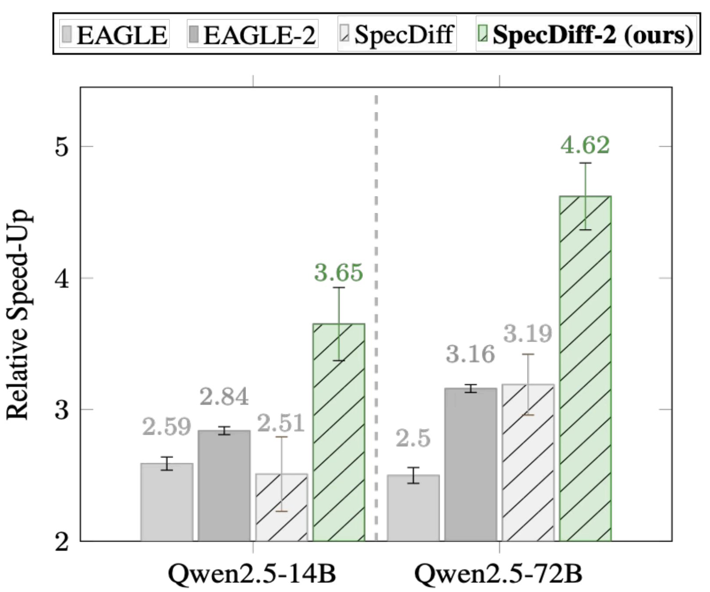
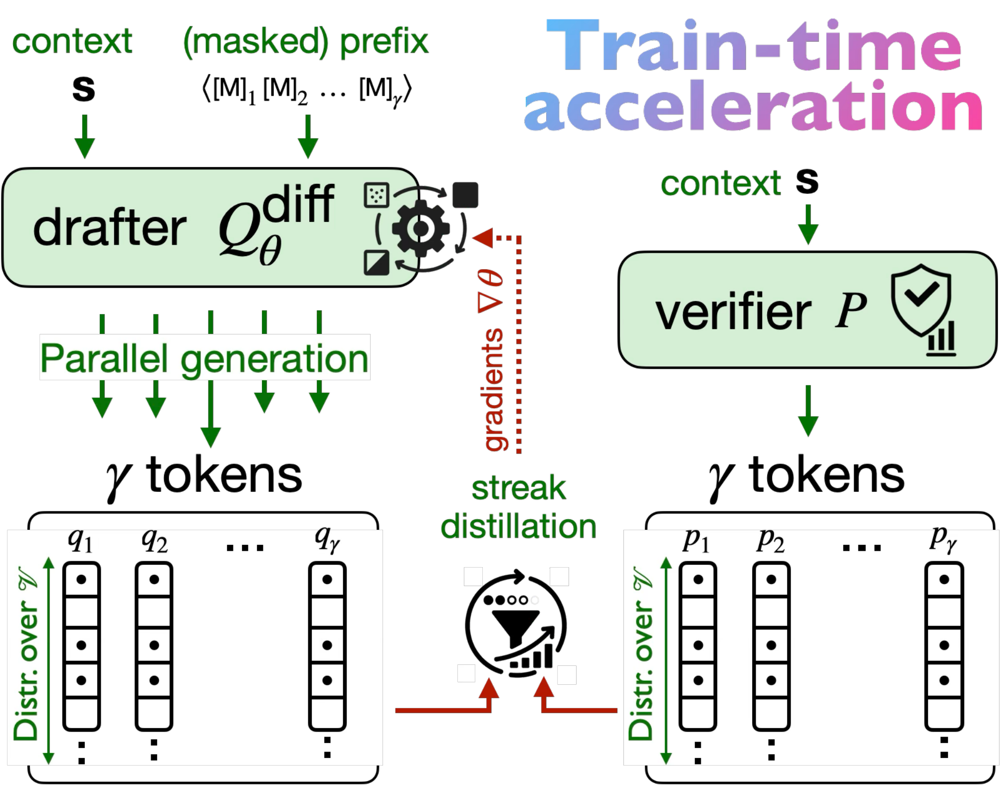
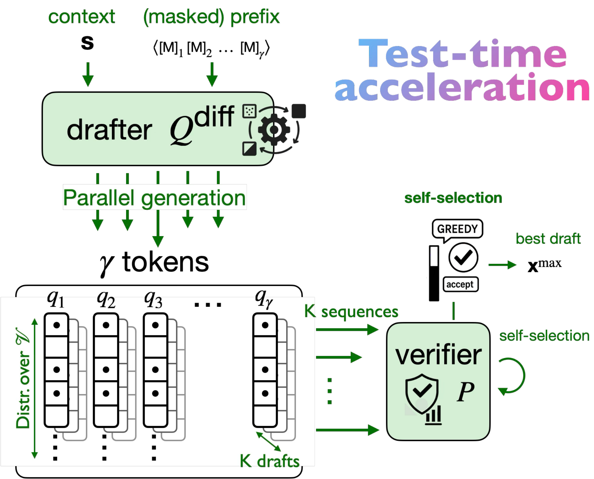
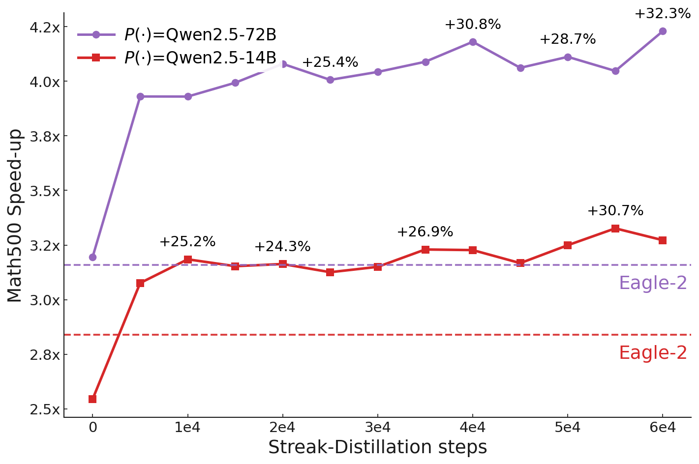

Accelerate large language model decoding with diffusion-model drafters:
draft many tokens in parallel, then verify exactly with the target LLM.
SpecDiff: Jacob K. Christopher · Brian R. Bartoldson · Tal Ben-Nun · Michael Cardei · Bhavya Kailkhura · Ferdinando Fioretto SpecDiff-2: Jameson Sandler · Jacob K. Christopher · Thomas Hartvigsen · Ferdinando Fioretto
This page is intended to be a readable, practitioner-friendly walkthrough. For the authoritative
details (derivations, hyperparameters, and full experiments), see the papers.

Overview
What is speculative diffusion decoding?
Speculative decoding is a draft-then-verify framework: a fast drafter proposes a
short continuation, and a large verifier checks those tokens in parallel. If the draft is
likely under the verifier, you accept a long prefix in one shot.
SpecDiff replaces the autoregressive drafter with a masked discrete diffusion model
that drafts an entire window of tokens in parallel via iterative denoising. This removes a major
bottleneck: drafting no longer requires token-by-token generation.
What does SpecDiff-2 add?
SpecDiff-2 focuses on a core practical issue: drafter–verifier alignment. Diffusion
drafters can be extremely parallel, but if they propose tokens the verifier often rejects, speed-up
evaporates.
Train-time alignment: streak-distillation to optimize for long accepted prefixes.
Test-time alignment: self-selection over multiple parallel drafts to maximize expected throughput.
Scaling insight: “acceleration–compute” scaling links faster decoding to better performance under fixed time budgets.

Train-time acceleration: streak-distillation trains the diffusion drafter to produce long accepted streaks.

Test-time acceleration: self-selection picks the draft expected to yield highest throughput.
Papers
SpecDiff
Speculative Diffusion Decoding: Accelerating Language Generation through Diffusion
Introduces diffusion-model drafters for speculative decoding. Shows that masked discrete diffusion
can draft long windows efficiently, enabling parallelism in both drafting and verification.
SpecDiff-2
SpecDiff-2: Scaling Diffusion Drafter Alignment For Faster Speculative Decoding
Adds principled alignment mechanisms tailored to diffusion drafters (streak-distillation + self-selection),
producing stronger end-to-end throughput while preserving lossless verification.
Headline Results (from the papers)
Numbers depend on model/task/settings. The goal here is to capture the “shape” of the gains; please
cite the papers for exact tables and experimental details.
Method
Key idea
Reported speed/throughput highlights
SpecDiff
Masked discrete diffusion drafter
Up to 7.2× vs vanilla decoding; up to 1.75× vs prior speculative baselines (reported).
SpecDiff-2
Alignment + multi-draft self-selection
Average 4.22× speed-ups; up to 5.5×; +55% throughput vs prior baselines (reported).
SpecDiff-2 (time budget)
Acceleration–compute scaling
On a 15s math reasoning budget: +63% accuracy vs vanilla; +11% vs unaligned diffusion drafting (reported).
Blog
Two-part walkthrough: first the core SpecDiff idea, then SpecDiff-2’s alignment improvements and the
strongest results.
Part I
SpecDiff: diffusion as a speculative drafter
If you’ve used speculative decoding before, the story is familiar: a small model drafts tokens and the
large model verifies them in parallel. The speed-up you get is proportional to how many draft tokens
the verifier accepts per iteration.
The catch is that most speculative systems still draft autoregressively, which means the drafter
itself is sequential. SpecDiff asks: what if the drafter could propose a whole block of tokens at once?
Key idea: Use a masked discrete diffusion language model as the drafter so drafting a window of
γ tokens is parallel over positions (with cost controlled by diffusion steps).
Concretely, the diffusion drafter starts from a masked window and iteratively denoises to produce
token distributions for every position. The verifier then scores those positions in parallel and accepts the
longest prefix that passes the acceptance rule. The loop repeats until EOS.
In practice, SpecDiff highlights an important theme for diffusion drafters: alignment matters as much as raw parallelism.
Part II
SpecDiff-2: scaling alignment (and scaling wins)
SpecDiff-2 treats the main failure mode head-on: even a very fast diffusion drafter is not useful if the verifier
rejects most of its proposed tokens. When acceptance is low—especially later in the draft window—you end up paying to
draft tokens that never get committed.
SpecDiff-2 in one line: keep diffusion drafting, but align the drafter to maximize the length of accepted
streaks (train-time), and pick the best among multiple candidate drafts (test-time).
Train-time acceleration: streak-distillation
Instead of optimizing for token-wise similarity, streak-distillation optimizes for long contiguous accepted prefixes.
The intuition is simple: the verifier commits a prefix, not independent tokens, so the objective should directly reward
long accepted runs.

Streak-distillation training improves Math500 speed-up over time (reported).
Test-time acceleration: self-selection
At inference time, diffusion models make it cheap to sample multiple candidate drafts in parallel. SpecDiff-2 uses this to
generate K drafts, estimate expected throughput, and verify only the best draft.
Self-selection: generate multiple drafts and verify the one expected to yield the best throughput.
Acceleration–compute scaling
One of the most compelling takeaways is that faster decoding can translate into better results when users (or systems)
operate under time constraints. If you can generate more tokens in the same wall-clock budget, you can allocate more “thinking”
to reasoning-heavy tasks.
Faster decoding → higher accuracy under fixed budgets (reported on Math500 with a 15s budget).
BibTeX
SpecDiff
@article{specdiff2024,
title = {Speculative Diffusion Decoding: Accelerating Language Generation through Diffusion},
author = {Christopher, Jacob K. and Bartoldson, Brian R. and Ben-Nun, Tal and Cardei, Michael and Kailkhura, Bhavya and Fioretto, Ferdinando},
journal = {arXiv preprint arXiv:2408.05636},
year = {2024}
}
SpecDiff-2
@article{specdiff22025,
title = {SpecDiff-2: Scaling Diffusion Drafter Alignment For Faster Speculative Decoding},
author = {Sandler, Jameson and Christopher, Jacob K. and Hartvigsen, Thomas and Fioretto, Ferdinando},
journal = {arXiv preprint arXiv:2511.00606},
year = {2025}
}